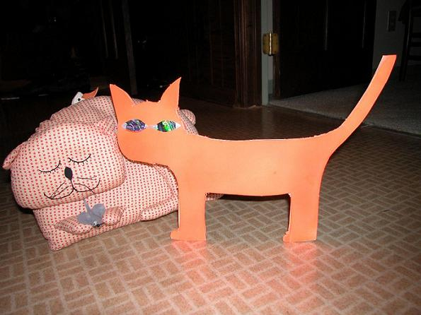

| Previous | EuroHacker Magazine, issue #3 | Next |
Words by DIzzIE, concept by ______ [c]opyleft 2005
A way to piss away a boring evening and piss off motorists.
Materials:
* Cardboard (~9'X15')
* Aluminum foil
* Brown or gray spray paint, or/and imitation fur (available from craft/fabric stores)
* Tape
* X-Acto knife or scissors
* Draw an outline of a cat on the cardboard.
* Cut the outline out.
* Spray paint and/or glue/tape the imitation fur to the cardboard.
* While the outline is drying cut out ovals from the tin foil for the eyes
(so that they will reflect the light from the headlights, we'll get to
that part in a minute).
* For greater reflexivity cover the tin foil with a few layers of
iridescent tissue paper (which can be obtained from a craft store or
usually any place that sells gift wrapping paper).
* Tape/glue the eyes onto the cat outline, be sure not to adversely affect
the reflexivity of the foil, so tape either around the edges or make a
double-sided loop and press to the underside of the foil.
* Make the support buttresses so the kitty will stand upright. Cut out
either 2 right-angle triangles or simply two flat beams that you can
bend at the bottom for greater support.
* Tape the supports firmly unto the back of the kitty, preferably behind
the legs to obscure them from view.
Find a medium-traffic, medium-speed road that has a good, obfuscated lookout point nearby. Wait until there are no cars on the road. Place your kitty in the middle of the street. Observe the fun.
Things that may/will happen:
* The car will come to a halting stop, someone will eventually get out and
move the kitty.
* The car will not notice the kitty and flatten it, making you go out and
tape any damaged appendages.
* The car will swerve to avoid the kitty, nearly colliding with oncoming
traffic.
* The car will stop and someone will get out and steal your kitty.
* A cop car will stop and the coppers will get out and start shining
flashlights in your general direction.
What it looks like when you only have bright orange paint lying
around:

Enjoy!